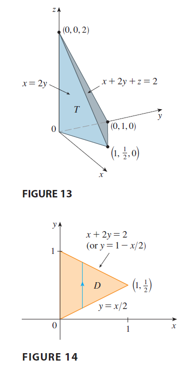

EXAMPLE 4 Find the volume of the tetrahedron bounded by the planes \(x + 2y + z = 2, x = 2y, x = 0,\) and \(z = 0\).

SOLUTION In a question such as this, it’s wise to draw two diagrams: one of the three-dimensional solid and another of the plane region \(D\) over which it lies. Figure 13 shows the tetrahedron \(T\) bounded by the coordinate planes \(x = 0, z = 0\), the vertical plane \(x = 2y\), and the plane \(x + 2y + z = 2\). Since the plane \(x + 2y + z = 2\) intersects the \(xy\)-plane (whose equation is \(z = 0\)) in the line \(x + 2y = 2\), we see that \(T\) lies above the triangular region \(D\) in the \(xy\)-plane bounded by the lines \(x = 2y, x + 2y = 2,\) and \(x = 0\). (See Figure 14.) The plane \(x + 2y + z = 2\) can be written as \(z = 2 - x - 2y\), so the required volume lies under the graph of the function \(z = 2 - x - 2y\) and above \[ D = \{(x, y) | 0 \le x \le 1, x/2 \le y \le 1 - x/2\} \] Therefore \[ V = \iint_D (2 - x - 2y) dA = \int_0^1 \int_{x/2}^{1-x/2} (2 - x - 2y) dy dx \] \[ = \int_0^1 [2y - xy - y^2]_{y=x/2}^{y=1-x/2} dx \] \[ = \int_0^1 \left[ 2(1 - \frac{x}{2}) - x(1 - \frac{x}{2}) - (1 - \frac{x}{2})^2 - (x - \frac{x^2}{2} - \frac{x^2}{4}) \right] dx \] \[ = \int_0^1 (x^2 - 2x + 1) dx = \left[ \frac{x^3}{3} - x^2 + x \right]_0^1 = \frac{1}{3} \]